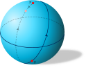

MathSciNet
MathSciNet
Main theme
Cut loci, focal loci and Morse–Bott theory
Given a closed submanifold $N$ of a manifold $M$, follow a shortest geodesic out of $N$. At some point it stops being shortest; these points make up the cut locus $\mathrm{Cu}(N)$. The cut locus is where the distance function $d_N$ fails to be smooth, and it carries a surprising amount of the topology of $M$.
Cut locus. $q \in \mathrm{Cu}(N)$ if some distance-minimal geodesic from
$N$ to $q$ stops being distance-minimal when extended beyond $q$.
Morse–Bott function. $f : M \to \mathbb{R}$ whose critical set is a
union of submanifolds, with the Hessian non-degenerate in the normal directions.
Thom space. For a vector bundle $E \to B$ with a metric,
$\mathrm{Th}(E) = D(E)/S(E)$, the disc bundle with its sphere bundle collapsed to a point.
Results
- With Somnath Basu: $d_N^2$ is Morse–Bott on $M \setminus \mathrm{Cu}(N)$, its gradient flow deformation retracts $M \setminus \mathrm{Cu}(N)$ onto $N$, and for closed $M$ the Thom space of the normal bundle of $N$ is homeomorphic to $M/\mathrm{Cu}(N)$. Algebr. Geom. Topol. (2023)
- With Aritra Bhowmick: cut and focal loci of submanifolds of Finsler manifolds, including a Klingenberg-type lemma for $N$-geodesic loops and the regularity of the normal exponential map. J. Geom. Anal. (2024, 2026)
- With Aritra Bhowmick: the cut time map is positive, so every closed submanifold of a Finsler manifold has a tubular neighbourhood, with a new geometric proof even in the Riemannian case. Preprint (2024)
- With Aritra Bhowmick and Jin-ichi Itoh: the cut locus $\mathrm{Cu}(p, g)$ depends continuously, in the Hausdorff metric, on the point and on the metric in the $C^2$ topology. J. Math. Anal. Appl. (2026)
- With Somnath Basu: a Reeb-type theorem: a closed manifold with a Morse–Bott function whose critical set is $S^k \sqcup S^l$ ($k \neq l$) is homeomorphic, though not necessarily diffeomorphic, to $S^{k+l+1}$. Preprint (2025)
